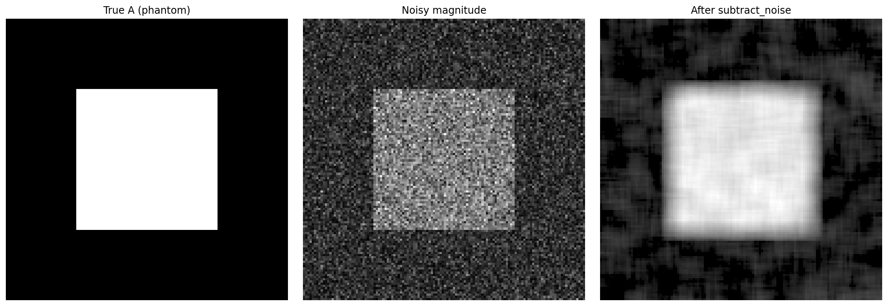

MRI magnitude noise model#
Magnetic resonance images are typically stored and analyzed as magnitude data, obtained from the quadrature combination of the real and imaginary components of the complex MR signal. While this representation is convenient, it introduces a characteristic noise behavior that differs from the original Gaussian noise present in the complex domain.
In regions where no true signal is present, such as background areas outside the object, the magnitude values follow a Rayleigh distribution. This property allows the noise level to be estimated directly from background statistics and is commonly exploited in MRI preprocessing.
When a true signal is present, the magnitude image no longer follows a Rayleigh distribution. Instead, the combination of the underlying signal amplitude and additive complex Gaussian noise results in a Rician distribution for the measured magnitude values. This transition from Rayleigh (noise-only) to Rician (signal plus noise) is a fundamental aspect of MRI magnitude data and has important implications for quantitative analysis.
In this section, the magnitude noise model is illustrated by simulating the quadrature sum of a deterministic signal and Gaussian noise, producing synthetic magnitude data of the form:
M = sqrt{A^2 + N^2}
Requires: numpy, matplotlib, mri-noiselab
This code can be executed in an IDE or from the terminal.
When matplotlib.pyplot.show() is called, execution pauses until the figure window is closed; figures can be saved to file before closing the window to continue execution.
Import modules, define useful functions and istanciate random generator#
1import numpy as np
2import matplotlib.pyplot as plt
3from scipy import stats
4import mri_noiselab as mrnl
5
6
7def simulate_complex_gaussian_noise(shape, sigma, rng):
8 """Generate complex Gaussian noise: n_r, n_i ~ N(0, sigma^2)"""
9 nr = rng.normal(loc=0.0, scale=sigma, size=shape)
10 ni = rng.normal(loc=0.0, scale=sigma, size=shape)
11 return nr, ni
12
13
14def rayleigh_background(sigma, n, rng):
15 """
16 Rayleigh magnitude for background (A=0):
17 M = sqrt(n_r^2 + n_i^2) -> Rayleigh(sigma)
18 """
19 nr, ni = simulate_complex_gaussian_noise((n,), sigma, rng)
20 return np.sqrt(nr**2 + ni**2)
21
22
23def magnitude_from_signal_and_noise(A, sigma, rng):
24 """
25 Rician magnitude given true signal A (considered Real):
26 M = sqrt( (A + n_r)^2 + (n_i)^2 )
27 where n_r, n_i ~ N(0, sigma^2) are gaussian distributed
28 """
29 nr, ni = simulate_complex_gaussian_noise(np.shape(A), sigma, rng)
30 return np.sqrt((A + nr) ** 2 + (ni) ** 2)
31
32
33def plot_hist_with_pdf(ax, data, dist, params, title, bins=80):
34 """Plot magnitude probability distribution"""
35 ax.hist(data, bins=bins, density=True)
36 x = np.linspace(0, np.max(data) * 1.05, 500)
37 ax.plot(x, dist.pdf(x, *params))
38 ax.set_title(title)
39 ax.set_xlabel("Magnitude")
40 ax.set_ylabel("Density")
41
42
43def snr_measure(x, selection):
44 """Signal and noise power ratio"""
45 data = x[selection]
46 p_signal = float(np.mean(data**2))
47 p_noise = float(np.var(data))
48 return p_signal / p_noise if p_noise > 0 else np.inf
49
50
51# initialize random generator
52rng = np.random.default_rng(42)
53
1) Background Rayleigh noise distribution generation#
1sigma_true = 20.0
2bg = rayleigh_background(sigma_true, n=200_000, rng=rng) #n backgruond samples
3
4# Fit Rayleigh with loc fixed to 0 (magnitude is non-negative)
5# scipy.stats.rayleigh paramization: (loc, scale) where scale ~ sigma
6ray_params = stats.rayleigh.fit(bg, floc=0) # -> (loc, scale)
7
8# Kolmogorov–Smirnov test against fitted Rayleigh
9
10D_ray, p_ray = stats.kstest(bg, "rayleigh", args=ray_params)
11
12# Mean/std ratio check
13ratio = float(np.mean(bg) / np.std(bg))
14expected_ratio = 1.91 #
15print("=== Background Area(Rayleigh) ===")
16print(f"True sigma: {sigma_true:.3f}")
17print(f"Fitted sigma (scale): {ray_params[1]:.3f}")
18print(f"mean: {np.mean(bg):.3f}, std:{ np.std(bg):.3f}")
19print(f"mean/std ratio: {ratio:.3f} (expected ~ {expected_ratio})")
20print(f"KS test: D={D_ray:.5f}, p_value={p_ray:.5g}\n")
21
22fig, ax = plt.subplots(figsize=(7, 5))
23
24plot_hist_with_pdf(
25 ax, bg, stats.rayleigh, ray_params,
26 title="Background magnitude distribution ~ Rayleigh"
27)
28
29plt.tight_layout()
30plt.show()

2) Signal Rician distribution generation#
1A_true = 60.0
2A = np.full((200_000,), A_true, dtype=np.float32) #200_000 signal samples
3sig = magnitude_from_signal_and_noise(A, sigma_true, rng=rng)
4
5# Fit Rice (Rician). scipy.stats.rice has shape parameter 'b' plus loc, scale.
6# We again fix loc=0 because magnitude is non-negative and typically loc=0.
7rice_params = stats.rice.fit(sig, floc=0) # -> (b, loc, scale)
8
9D_rice, p_rice = stats.kstest(sig, "rice", args=rice_params)
10
11print("=== Signal Area(Rician) ===")
12print(f"True A: {A_true:.3f}, true sigma: {sigma_true:.3f}")
13print(f"Fitted rice params: b={rice_params[0]:.3f}, scale={rice_params[2]:.3f}")
14print(f"KS test: D={D_rice:.5f}, p_value={p_rice:.5g}\n")
15
16fig, ax = plt.subplots(figsize=(7, 5))
17
18plot_hist_with_pdf(
19 ax, sig, stats.rice, rice_params,
20 title="Signal magnitude distribution ~ Rician (Rice)"
21)
22
23plt.tight_layout()
24plt.show()

3) Apply cleaning on a small phantom#
Here we make a 2D phantom, add Rician noise in-signal, Rayleigh in background, then run mrnl.subtract_noise(image, bg_area).
1phantom = np.zeros((128, 128), dtype=np.float32)
2phantom[32:96, 32:96] = 60.0 # constant signal region
3
4noisy = magnitude_from_signal_and_noise(phantom, sigma_true, rng=rng)
5
6# choose a background ROI with (ideally) no signal
7bg_area = noisy[0:24, 0:24]
8
9cleaned = mrnl.subtract_noise(noisy, bg_area, f_size=10)
10
11roi = np.zeros_like(phantom, dtype=bool)
12roi[32:96, 32:96] = True
13
14print("=== Phantom demo + mrnl.subtract_noise) ===")
15print(f"SNR measure (noisy, ROI): {snr_measure(noisy, roi):.3f}")
16print(f"SNR measure (cleaned, ROI): {snr_measure(cleaned, roi):.3f}")
17
18fig2, ax2 = plt.subplots(1, 3, figsize=(15, 5))
19ax2[0].imshow(phantom, cmap="gray"); ax2[0].set_title("True A (phantom)"); ax2[0].axis("off")
20ax2[1].imshow(noisy, cmap="gray"); ax2[1].set_title("Noisy magnitude"); ax2[1].axis("off")
21ax2[2].imshow(cleaned, cmap="gray"); ax2[2].set_title("After subtract_noise"); ax2[2].axis("off")
22plt.tight_layout()
23plt.show()

References and further reading#
R. Mark Henkelman, Measurement of signal intensities in the presence of noise in MR images, Medical Physics, 1985.